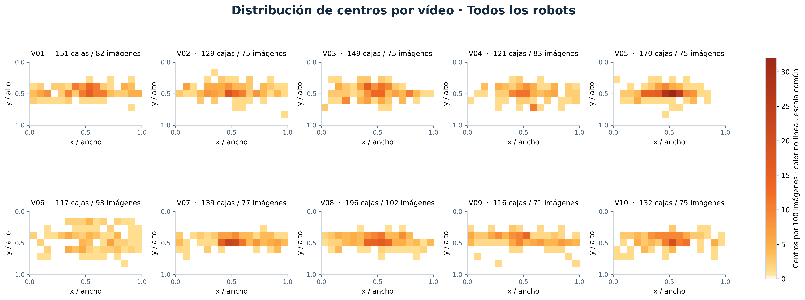
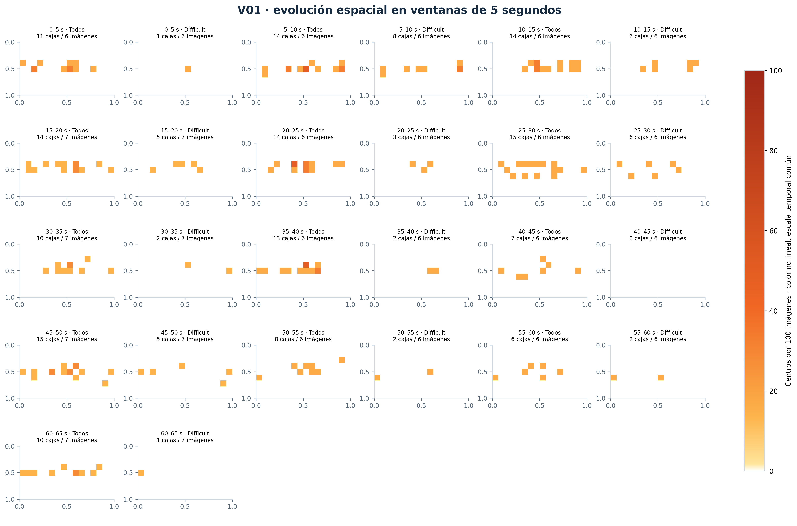
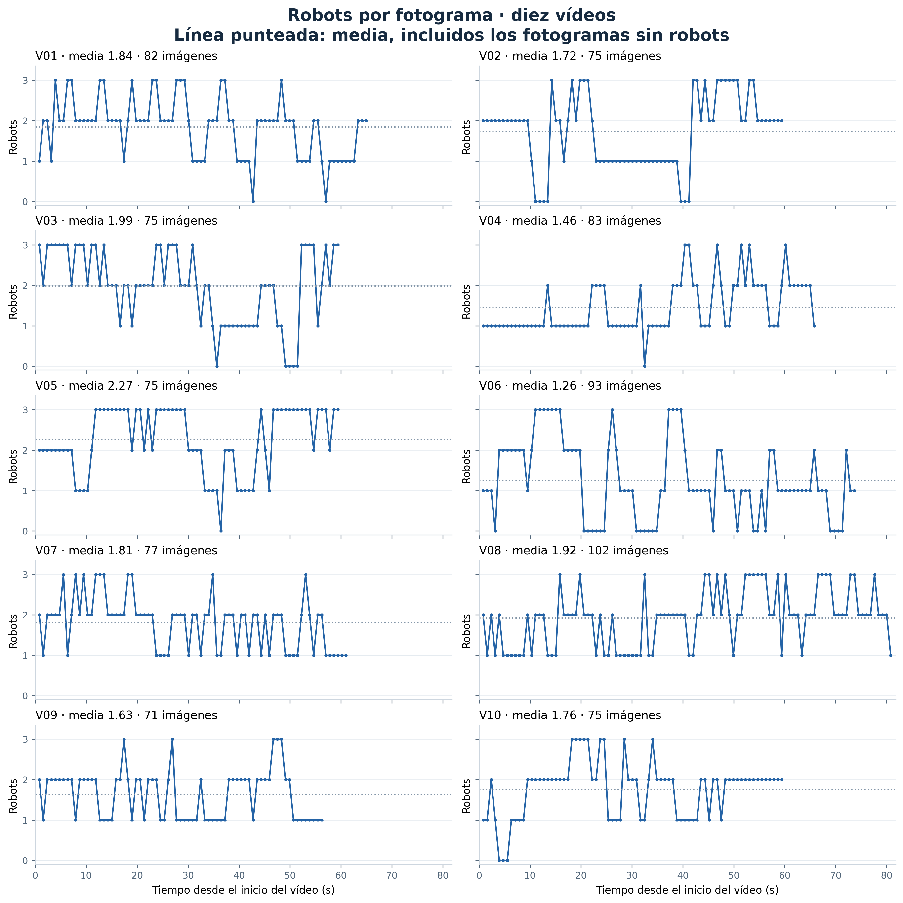

01Distribución por vídeoTodos los robots y difficult, con una escala común.  Abrir figura interactiva → Exportar: PNG 300 ppp · SVG · PDF
02Evolución espacialVentanas de 5 segundos, con recuentos visibles y salto por vídeo.  Abrir figura interactiva → Exportar: PNG 300 ppp · SVG · PDF
03Robots por fotogramaDiez vídeos sincronizados. Cada curva termina con su última muestra.  Abrir figura interactiva → Exportar: PNG 300 ppp · SVG · PDF